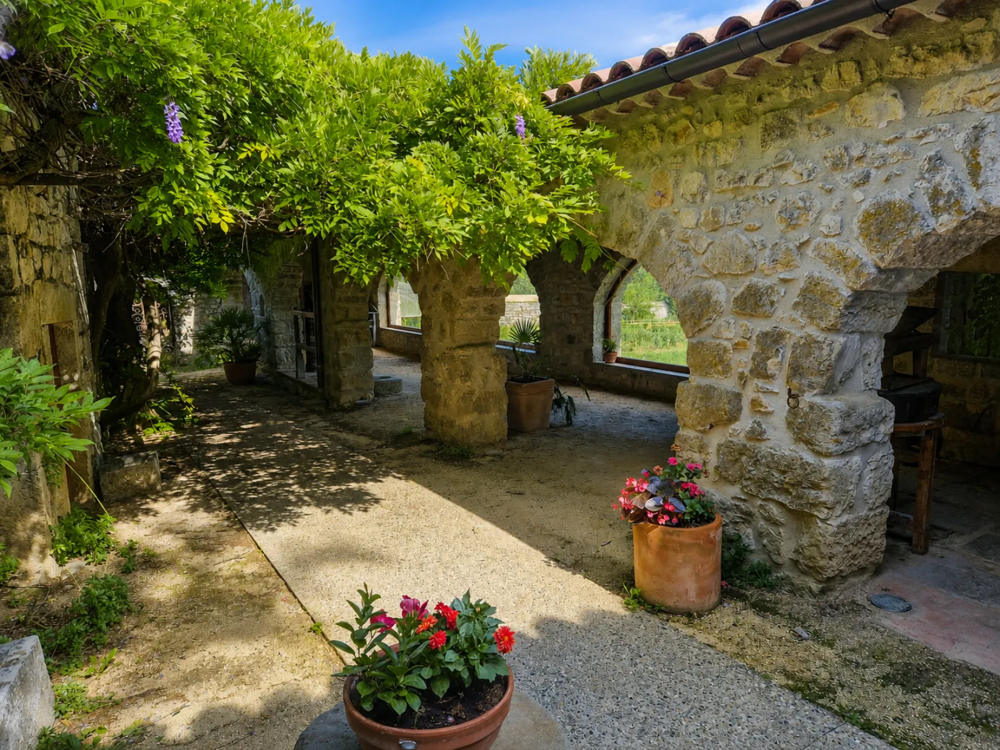

Op een steenworp van Les Cabritas Sud-Ardèche, in de gemeente Saint-Alban-Auriolles, bevindt Mas Daudet zich in de voormalige Mas de la Vignasse, een boerderij die sinds de 17e eeuw van de familie van moederskant van schrijver Alphonse Daudet was. Hij werd hier niet geboren, maar op deze boerderij in de Ardèche bracht de jonge Alphonse tot zijn negende een deel van zijn zomers door — verblijven die een blijvende indruk op zijn kinderfantasie maakten en een deel van zijn werk voedden. De boerderij, nu museum en familiepark, laat het plattelandsleven in de Ardèche van de 19e eeuw herleven.

Een boerderij in de Ardèche in de familie Daudet
De moeder van Alphonse Daudet, Adeline Reynaud, kwam uit de Ardèche, en haar familie bezat deze boerderij sinds 1645. Hoewel de schrijver in Nîmes werd geboren, bracht hij verschillende kinderzomers door op de Mas de la Vignasse, tussen wijnstokken, olijfbomen en moerbeibomen voor de zijderupsen. In de zalen van het museum ziet u nu manuscripten, familieportretten en persoonlijke voorwerpen die deze minder bekende kant van de schrijver belichten, ver van het Provençaalse beeld van de molen van Fontvieille dat meestal met zijn werk wordt geassocieerd.
Zijdekwekerij, tuinen en familiepark
De boerderij toont het dagelijkse leven op een landgoed in de Ardèche in de 19e eeuw: distilleren, smeden, olijven persen, kastanjes pellen... en vooral een werkende zijdekwekerij, waar u de volledige levenscyclus van de zijderups volgt, van ei tot cocon, een activiteit waar vroeger de hele vallei van leefde. Op het terrein, met een vijgentuin en ontdekkingspaden, zijn ook speelplekken voor kinderen, wat het tot een populair gezinsuitje maakt, ook voor wie het werk van Daudet niet kent.
Goed om te weten voor uw bezoek
Mas Daudet ligt op een steenworp van Les Cabritas Sud-Ardèche, in de gemeente Saint-Alban-Auriolles — slechts enkele minuten te voet of met de auto. Het museum is meestal open van de lente tot de herfst, met beperkte openingstijden buiten het zomerseizoen, dus controleer de openingsdagen en -tijden voordat u vertrekt. In de zomer zijn er op bepaalde dagen rondleidingen, en een wandelpad verbindt het park van de boerderij met het naburige dorp Labeaume.
Praktische informatie vanuit Les Cabritas
- Afstand vanaf Saint-Alban-Auriolles: vlakbij, op een paar stappen van het vakantiehuis
- Beste periode: lente tot herfst (controleer de openingstijden)
- Ideaal voor: gezinnen met kinderen, literatuurliefhebbers, plattelandserfgoed
Zin om Mas Daudet te ontdekken vanuit uw vakantiehuis in de Ardèche?
Les Cabritas Sud-Ardèche verwelkomt u in Saint-Alban-Auriolles, in het hart van de Zuid-Ardèche, voor een comfortabel verblijf met privézwembad, vlak bij de mooiste plekken van de streek.
Beschikbaarheid bekijken